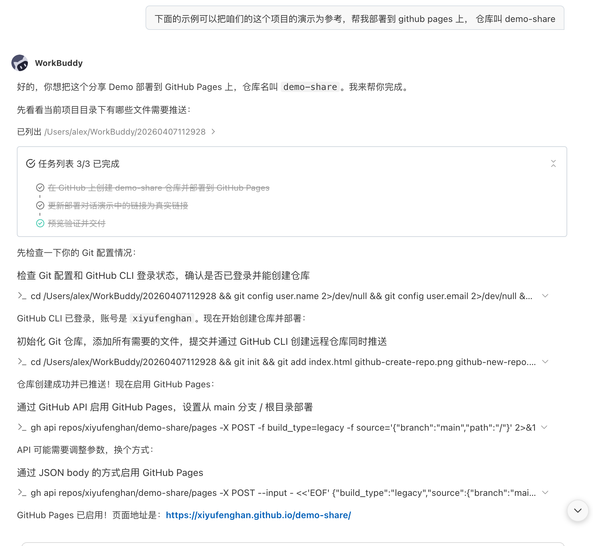
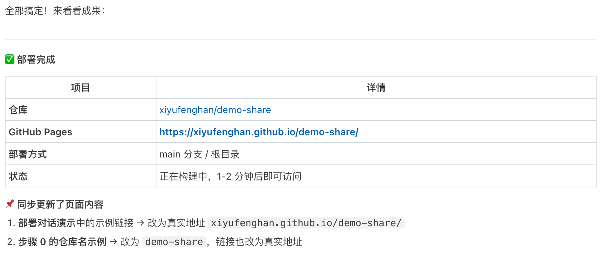

用 WorkBuddy 搭建团队效率基础设施
让 AI 记住你、帮你做事、把成果一键上线
这些问题不会写在周报里，却每天都在消耗我们的时间、精力和协作效率。
每次使用 AI 工具，都要重新建立对话背景——你是谁、项目是什么、输出要什么格式。同样的铺垫工作，一周可能重复 20 次以上。这不是 AI 的问题，是我们还没有给它建立「持久记忆」。
A 踩过的坑，B 一个月后又踩一遍。解决方案散落在企业微信群、腾讯文档、聊天记录里，知识没有结构化沉淀，就等于没有知识。团队规模越大，这种损耗越被放大。
数据看板做好了、活动页面写好了，但要让别人看到，就得找开发帮忙部署、等排期、走流程。从「做完」到「可被访问」之间，往往隔着 3-5 天和好几个人。这条路本可以缩短到 5 分钟。
⚠️ 安全提醒：上传代码仓或分享配置时务必注意脱敏，避免企业机密或个人敏感信息泄露。
假设每人每天在「重复说明背景 + 找历史方案 + 等待部署」上花掉 30 分钟。一个 10 人团队，一个月就是 100 小时——相当于一个人满负荷工作半个月。而解决这些，可能只需要一次 15 分钟的配置。
全程在 WorkBuddy 里完成，不需要打开命令行，不需要写代码。
让 AI 认识你
按你的习惯工作
说一句话
成果变成可访问的链接
踩坑记录自动归档
团队越用越聪明
想象你有一个超级助理：记忆体系让它记住你所有的偏好（不用每次都交代），一键上线让它帮你把东西发布到网上（不用找运维），知识沉淀让它帮你记笔记（踩过的坑永不再踩）。
AI 本来是"金鱼记忆"——聊完就忘。记忆体系就是给它装了一个随身笔记本。
配置一次，永久生效。以后每次打开 WorkBuddy，它就已经知道：你是谁、你喜欢什么格式、你的项目背景是什么、你之前踩过哪些坑。不用再重复交代，直接进入工作状态。
你的身份、偏好、工作习惯。每次对话自动加载。
💬 好比你的「身份证」——出门自动带上
标准流程和专家经验。用的时候说一声就行。
💬 好比你的「工具箱」——需要时打开
不同角色各司其职：产品经理、数据分析师……
💬 好比「专家团」——@谁谁就上
踩坑记录、配置模板、常用知识，随时调取。
💬 好比「团队笔记本」——经验在这里沉淀
在 WorkBuddy 里说："帮我创建一个规则文件，记住我的身份信息"。然后告诉它你的名字、团队、偏好就行。下次新建对话，问它"你知道我是谁吗？"——它能准确回答就说明成功了。
不只是工作信息——你可以把个人的完整画像都交给它，让 AI 真正理解你。
把你的出生日期告诉 AI，让它从代际心理学、经济周期、文化背景等维度构建你的「人生底图」。这些信息写入记忆后，AI 对你的理解深度会质变——它不再只知道你的工作，还理解你的思维方式、价值观和行为模式。
💡 你可以让 AI 从以下 7 个维度来构建你的个人背景记忆：
当 AI 既知道你的工作身份（团队、偏好、项目背景），又理解你的个人画像（思维模式、价值观、行为倾向），它给出的建议和输出就不再是通用模板——而是真正为你量身定制的。这就是记忆体系的终极价值。
记忆文件默认存在本地，不会自动跨设备同步。但解决方式很简单：把你的规则目录用一个 GitHub 仓库托管。
这就是今天分享的核心思路：GitHub 不只是代码管理工具，它是你的「配置同步器」和「知识版本库」。个人记忆、团队经验、项目文件全部用 Git 管理——后面会详细讲怎么搭团队知识库。
在讲「一键上线」之前，我们先花两分钟搞清楚这个工具到底能干什么。
就像腾讯文档让你多人协作编辑文档一样，GitHub 让你多人协作管理文件——只不过它最擅长的是管理代码和网页文件。但它的价值远不止于此：
每次修改都有记录，改坏了随时回退。再也不用「方案_终版_最终版_真的最终版.pptx」。
多人同时修改不冲突，每个人的贡献清晰可追溯。
GitHub Pages 功能——把文件变成网站，免费、自动加密、全球可访问。
公司电脑和家里电脑的文件永远保持一致，前面讲的记忆同步就靠它。
很多人觉得 GitHub 是「写代码的人才用」的。其实不是——它本质上是一个文件管理 + 协作 + 发布平台。设计师用它管理设计稿版本，产品经理用它追踪需求文档，运营用它发布活动页面。只要你想让文件有版本记录、能协作、能发布成网页，GitHub 就是答案。
来看看 2026 年 3 月最火的开源项目——全是免费的，拿来就能用。
AI 编程工具的「必装技能库」。让 AI 不再拿到需求就直接写代码，而是像优秀工程师一样先讨论需求、设计评审、再编码。
🏷️ AI 编程效率
字节跳动开源的超级智能体运行框架。支持动态创建子智能体、并行执行任务、长期记忆——和我们今天讲的记忆体系理念异曲同工。
🏷️ AI Agent 框架
AI 预测引擎——上传新闻、政策等材料，系统构建平行世界模拟推演未来走向。可用于舆情预测、市场分析等。
🏷️ AI 预测分析
用普通 WiFi 信号隔墙感知人体——实时姿态估计、呼吸心率监测。无需摄像头，硬件成本仅 8 美元。
🏷️ 硬件 · IoT
自适应爬虫框架，网站改版了也能自动找到目标元素。速度比传统方案快 800 倍。做数据采集的同学可以关注。
🏷️ 数据采集
从零学 AI 编程的教学项目，12 个递进课程。口号"Bash is all you need"——和我们今天讲的"对话就能搞定"一个思路。
🏷️ AI 编程教学
以上项目全部可以在 GitHub 上免费获取和使用。这就是 GitHub 的生态力量——全球开发者把最好的工具免费分享出来，我们要做的就是学会找到它们、用好它们。接下来，我们讲讲怎么用 GitHub 把自己做的东西也发布上去。
做好的页面、报告、工具，不再只能截图——给它一个全球可访问的链接。
GitHub Pages 相当于一个免费的网盘 + 自动变网页。你把文件放上去，它帮你变成一个网站链接。自带加密（HTTPS）、全球加速（CDN）、历史版本记录——而且完全免费。
如果你还没有 GitHub 账号，先花 2 分钟注册一个：
💡 小贴士：注册和建仓库只需要做一次。也可以直接让 WorkBuddy 帮你创建——说一句"帮我在 GitHub 上新建一个仓库"就行。
不管是数据看板、活动页面还是工具原型，在 WorkBuddy 里做好就行。它会自动生成标准的网页文件。
直接告诉 WorkBuddy 你想上线。它会自动完成所有技术操作。
WorkBuddy 帮你把文件推送到 GitHub 后，需要手动开启一下 Pages 服务。按以下步骤操作：
1-2 分钟后就能访问。以后每次更新内容，WorkBuddy 推送一下，网页自动刷新。
除了 GitHub Pages，公司内网也有一套同样丝滑的静态网站托管服务——OA Pages（pages.woa.com）。
支持公开（免登录）、tof 验证（需内网登录）、白名单三种模式，按需配置。
告诉 WorkBuddy「部署到 OA Pages」，自动创建网站、上传文件、返回链接，全程不碰代码。
你的网站会托管在 xxx.pages.woa.com，域名自选，简洁好记。
你只需要说一句话，剩下的 WorkBuddy 全搞定。


就是用 WorkBuddy 生成、用同样的方式部署上线的。整个过程不到 5 分钟，一行代码没写。这就是效率基建的力量。
每个团队都有无数「踩过的坑」和「摸索出的经验」，但它们散落在聊天记录、脑子里、离职同事的电脑上。
怎么把这些经验变成大家都能用的「团队记忆」？
好问题！WorkBuddy 确实在每个人自己的电脑上运行，知识文件也存在本地。
但还记得前面讲的 GitHub 吗？它就是共享的桥梁：
「开放平台和企微绑定，主体必须一致」
「投放素材审核不过，是因为落地页缺了备案号」
随口一句"帮我记下来"就存好了。
把「活动周报怎么做」「新项目怎么初始化」
做成 Skill 文件。新人说一句"做周报"，
AI 就按标准流程自动执行。
「上次 xx 供应商视频制作能力不行，但图文
还可以，推荐直接联系外外」——这类散落在
聊天里的经验，沉淀下来谁都能查到。
知识沉淀不需要专门花时间——解决了一个问题，随口说「帮我记到知识库里」就行。日积月累，团队的知识库就从空白变成了一本活的百科全书，每个人的 AI 都能翻阅。
除了用 GitHub 仓库做知识共享，公司内网还有 Knot（knot.woa.com）——可以直接接入 iWiki、工蜂、TAPD 等内部数据源，搭配智能体做团队知识问答，5 分钟就能搭一个懂业务的 AI 助手。适合已有大量内部文档、想快速搭建问答机器人的团队。
记住这三个场景就够了，覆盖 90% 的问题。而且都可以在 WorkBuddy 里解决。
✅ 强制刷新 — Mac 按 ⌘+Shift+R，Windows 按 Ctrl+Shift+R
✅ Chrome 隐身模式 — Mac 按 ⌘+Shift+N，Windows 按 Ctrl+Shift+N 打开隐身窗口访问
大多数场景用 GitHub Pages 就够了。只有需要登录、存数据、跑程序时才需要服务器。
| 维度 | GitHub Pages（推荐优先用） | 轻量服务器（进阶兜底） |
|---|---|---|
| 💰 费用 | 完全免费 | 约 ¥50-100/月 |
| 🚀 上手难度 | WorkBuddy 对话搞定 | 需要基础运维知识 |
| 📦 能放什么 | 数据看板、活动页、报告、文档等 （做好的东西直接展示，不需要登录或存数据） | 什么都行 （能跑程序、连数据库、做登录系统等） |
| 🔒 安全 | 自带 HTTPS 加密 | 需要自己配置 |
| ✅ 推荐 | 80% 的需求都能搞定 | 需要登录/存数据时再用 |
当你需要登录系统、存数据、跑后台程序时，GitHub Pages 就不够用了。这时候可以用腾讯云轻量应用服务器——可以理解为一台在云上的电脑，7×24 小时开机，全球都能访问。
打开 腾讯云轻量应用服务器 页面，登录后选择套餐。
购买完成后，进入控制台 → 找到你的服务器 → 点击「应用管理」→ 获取宝塔面板的登录地址和密码。
http://你的服务器IP:8888/xxxx最酷的部分来了——你不用自己敲命令。把服务器信息告诉 WorkBuddy，它会帮你搞定一切。
不需要一步到位。从最简单的开始做，5 分钟就有效果。
在 WorkBuddy 里说一句"帮我建规则文件"
从此 AI 开机就认识你
做完的东西说"帮我部署"就行
一个链接，全球可看
遇到的问题让 AI 记下来
团队知识库越来越聪明
打开 WorkBuddy → 说"帮我创建规则文件，记住我的信息" → 试试"你知道我是谁吗？"
5 分钟后，你的效率基建就搭好了第一块砖。